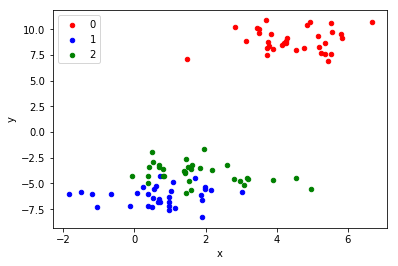
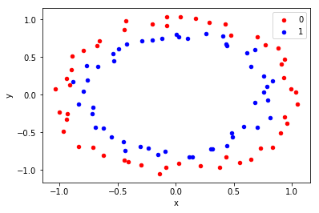

scikit-笔记:100问
Table of Contents
- 1. 100 QandA of sklearn
- 1.1. How to Generate Test Datasets in Python with scikit-learn
- 1.2. How to check the predict accuracy of classification or clustering
1 100 QandA of sklearn
1.1 How to Generate Test Datasets in Python with scikit-learn
- How to generate multi-class classification prediction test problems.
- How to generate binary classification prediction test problems.
- How to generate linear regression prediction test problems.
1.1.1 How to generate multi-class classification prediction test problems.
In this section, we will look at three classification problems: blobs, moons and circles.
1.1.1.1 Blobs Classification Problem
The make_blobs() function can be used to generate blobs of points with a
Gaussian distribution.
You can control how many blobs to generate and the number of samples to generate, as well as a host of other properties.
The problem is suitable for linear classification problems given the linearly separable nature of the blobs.
from sklearn.datasets.samples_generator import make_blobs from matplotlib import pyplot from pandas import DataFrame # generate 2d classification dataset X, y = make_blobs(n_samples=100, centers=3, n_features=2) # scatter plot, dots colored by class value df = DataFrame(dict(x=X[:,0], y=X[:,1], label=y)) colors = {0:'red', 1:'blue', 2:'green'} fig, ax = pyplot.subplots() grouped = df.groupby('label') for key, group in grouped: group.plot(ax=ax, kind='scatter', x='x', y='y', label=key, color=colors[key]) pyplot.show()

1.1.1.2 Moons Classification Problem
from sklearn.datasets import make_moons from matplotlib import pyplot from pandas import DataFrame # generate 2d classification dataset X, y = make_moons(n_samples=100, noise=0.1) #<<<<-HERE # scatter plot, dots colored by class value df = DataFrame(dict(x=X[:,0], y=X[:,1], label=y)) colors = {0:'red', 1:'blue'} fig, ax = pyplot.subplots() grouped = df.groupby('label') for key, group in grouped: group.plot(ax=ax, kind='scatter', x='x', y='y', label=key, color=colors[key]) pyplot.show()
1.1.1.3 Circles Classification Problem
from sklearn.datasets import make_circles from matplotlib import pyplot from pandas import DataFrame # generate 2d classification dataset X, y = make_circles(n_samples=100, noise=0.05) #<<<<-HERE # scatter plot, dots colored by class value ## create a pandas.DataFrame from a dict to store dataset df = DataFrame(dict(x=X[:,0], y=X[:,1], label=y)) colors = {0:'red', 1:'blue'} fig, ax = pyplot.subplots() ## grouped = df.groupby('label') print (type(grouped)) for key, group in grouped: group.plot(ax=ax, kind='scatter', x='x', y='y', label=key, color=colors[key]) pyplot.show()

1.1.2 How to generate linear regression prediction test problems.
Regression is the problem of predicting a quantity given an observation.
The make_regression() function will create a dataset with a linear relationship between inputs and the outputs.
from sklearn.datasets import make_regression from matplotlib import pyplot # generate regression dataset X, y = make_regression(n_samples=100, n_features=1, noise=0.1) # plot regression dataset pyplot.scatter(X,y) pyplot.show()
1.1.3 How to generate dataset from a curve with some noise
you must specify the parameter name — 'size' when using uniform distribution to generate noise
import numpy as np rng = np.random.RandomState(42) noise = rng.uniform(size=20) noise
array([ 0.37454012, 0.95071431, 0.73199394, 0.59865848, 0.15601864, 0.15599452, 0.05808361, 0.86617615, 0.60111501, 0.70807258, 0.02058449, 0.96990985, 0.83244264, 0.21233911, 0.18182497, 0.18340451, 0.30424224, 0.52475643, 0.43194502, 0.29122914])
x = np.linspace(-3, 3, 100) print(x) rng = np.random.RandomState(42) y = np.sin(4 * x) + x + rng.uniform(size=len(x)) plt.plot(x, y, 'o');
1.2 How to check the predict accuracy of classification or clustering
- from sklearn.metrics import confusion_matrix
- from sklearn.metrics import accuracy_score
- from sklearn.metrics import adjusted_rand_score
Unsupervised Learning Part 2 – Clustering comparing to true labels using confusion_matrix and accuracy_score comparing to true labels using adjusted_rand_score